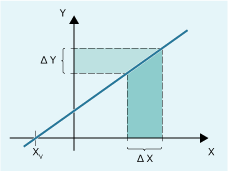

Certain dressing strategies (e.g. dressing roller) are characterized by the fact that the grinding wheel radius is continuously (linearly) reduced as the dressing roller is fed in. This strategy requires a linear function between infeed of the dressing roller and writing the wear value of each length. The linear function is defined using the predefined procedure FCTDEF(...) for up to third order polynomial functions.
y = f(x) = a0 + a1*x1
a1: Gradient of the straight line, with a1= Δx / Δy
a0: Shift of the straight line along the X axis with a0 = -a1 * XV

| Defining a polynomial function for PUTFTOCF(...): y = f(x) = a0 + a1*x + a2*x2 + a3*x3 | |
< | Function number | |
Data type: | INT | |
Range of values: | 1, 2, 3 | |
| Lower limit value | |
Data type: | REAL | |
| Upper limit value | |
Data type: | REAL | |
| Coefficients of polynomial function | |
Data type: | REAL | |
Function number: 1
Lower and upper limit value: -100, 100
Gradient of the characteristic: a1 = 1
The operating point should be located at the center of the characteristic. Based on the setpoint position of axis XA in the WCS at the instant that the function is defined in the NC program, the characteristic must be shifted in the negative Y direction: a0 = -a1 * XAD = -1 * $AA_IW
a2 = a3 = 0
UL | Upper limit value |
LL | Lower limit value |
XAD | Setpoint of axis XA at the time that the function is defined in the NC program |
| Program code | Comment |
|---|---|
| FCTDEF(1,-100,100,-$AA_IW[XA],1) | ; Function definition |
See also:
Write online tool offset continuously (PUTFTOCF)
Write online tool offset, discrete (PUTFTOC)
Activate/deactivate online tool offset (FTOCON/FTOCOF)